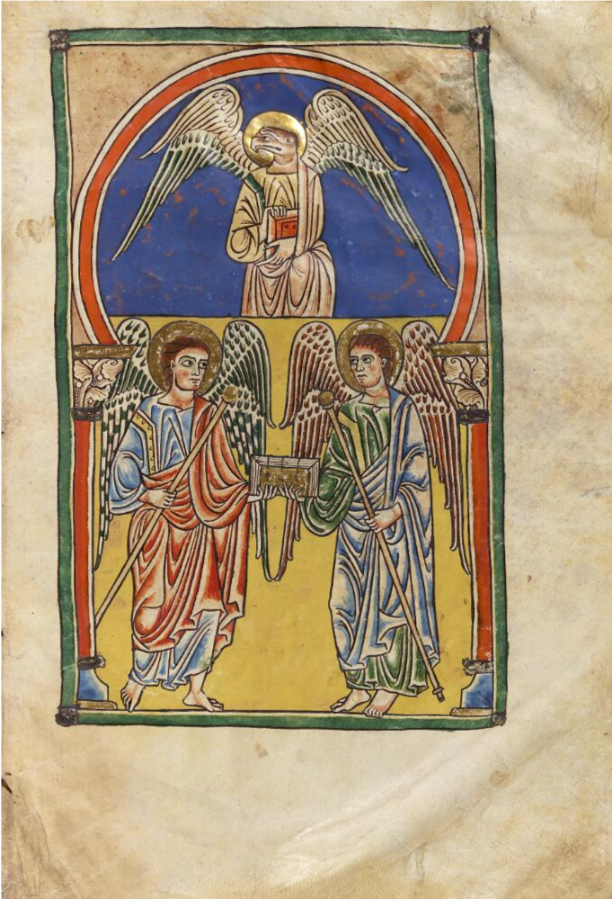

Content from Introduction to TEI
Last updated on 2025-01-28 | Edit this page
Overview
Questions
- What is TEI?
- How is TEI constructed?
- How is TEI used?
Objectives
- Understand the key features of a simple TEI record.
- Explain the ways in which TEI can be used to describe special collections material.
- xplain some of the key jargon used in TEI cataloguing.
- “Complete a simple TEI template.
- Find information about cataloguing in TEI.
What is TEI?
TEI stands for: the Text Encoding Initiative. It has been developed to describe text based objects (eg. manuscripts, archives, letters) but is also being used in some cases to describe visual materials. TEI (helpfully) is actually three things:
- it is a set of guidelines for describing objects and structuring information.
- it is an organisation which oversees the production of official guidelines (more on this later).
- it is a community of practice of people using the guidelines.
TEI is one kind of mark up language.
Markup encodes information about text – so it could describe the
structure, appearance and content of a text. Digital markup has to be
explicit and unambiguous so that a computer can understand it.
TEI is based on XML (eXtensible Markup Language), which is a descriptive markup language. EAD (encoded archival description), used to describe archival materials, also uses xml.
Markup can be:
- presentational (it tells you about how the text appears on the page eg. line breaks, tabs etc.),
- procedural (it gives an output device, for example a printer, information about how it should deal with text) or
- descriptive (it encodes the structure of the text, but not what to do with it).
(Adapated from Coombs, James H., Allen H. Renear, and Steven J. DeRose. 1987. “Markup Systems and the Future of Scholarly Text Processing.” in (Landow and Delaney 1993))
TEI is very broad and flexible – it can be used in many ways. At the moment, at The Unversity of Manchester Library, we are using it primarily as a mechanism for structuring information.
XML examples
XML is made up of content, elements and attributes.
XML content and elements
Here you can see the ‘human readable’ content –
1 column, 25 lines (it describes how a manuscript page is
laid out) – this is what gets displayed on a viewer or online catalogue
(or in a PDF version). This is surrounded by elements which structure
the information. Like in html, the element also determine the formatting
of the content.
The common element <p> for paragraph, is nested inside the element
<layout>.
Every element has an opening and closing ‘tag’. The beginning of the element is
denoted by the element name in angled brackets. The end of the element
has a slash before the element name. You can get ‘empty’ elements
without content, like page break <pb/> (this
functions as the beginning and end of an element).
XML attributes with values
Elements can also contain ‘machine-readable’ content. This can be used to search and filter through large datasets.
Here, the number of columns and lines is also given in the attributes.
The attribute names are shown here in olive brown. This is followed by an equal sign, then the content in double quotes.
How is TEI constructed?
XML
<?xml version="1.0" encoding="UTF-8"?>
<TEI>
<teiHeader>...</teiHeader>
<facsimile>...</facsimile>
<text>...</text>
</TEI>There are three main elements in a TEI file: header, facsimile and text. All the other elements are nested in one of these.
- The
<teiHeader>describes both the TEI file itself and its ‘source’ (i.e. the object which is being encoded). -
<facsimile>is where metadata about digital facsimiles (images) is provided. -
<text>is where the text is transcribed.
The images are from screenshots of the ‘outline’ view in the Oxygen editor – you can use this to navigate around a TEI document. XML enables linking between these sections. For example, if you describe an illustration from the item in the header, this can be linked to via the facsimile section.
In this episode, we won’t focus on how the facsimile section is arranged.
Header
XML
<TEI>
<teiHeader>
<fileDesc>
<titleStmt>Catalogue of Latin Manuscripts</titleStmt>
<publicationStmt>The University of Manchester Library</publicationStmt>
<sourceDesc>...</sourceDesc>
</fileDesc>
<encodingDesc>...</encodingDesc>
<profileDesc>...</profileDesc>
<revisionDesc>...</revisionDesc>
</teiHeader>
<facsimile>...</facsimile>
<text>...</text>
</TEI>-
<fileDesc>– this describes the TEI file itself, for example its title, author and publication details (including rights statements), and contains the description of the source, such as the manuscript. We’ll cover this in more detail at the next episode. -
<encodingDesc>– this describes how the file has been encoded, including what taxonomies are used (for example states that Library of Congress Subject Headings are being used). -
<profileDesc>– includes the subject headings themselves, information about language, and can containcorrespDesc. -
<revisionDesc>– where you record any changes to the file (should have date and name, and can also include details of changes made).
Text
XML
<TEI>
<teiHeader>...</teiHeader>
<text xml:id="HAM/1/1/3/8">
<body>
<pb n="1"/>
<lb/>...
<opener>Dear ...</opener>
<lb/>...
...<choice>learnd</choice>...
<lb/>...The text can be divided into three main components: -
<front> – for front matter – title, prefaces,
contents page etc. - <body> is the main body of the
text! - <back> is the back matter – indexes etc.
You can also ‘nest’ other texts within text.
Scholarly apparatus
TEI is used to transcribe texts in a systematic and complex structure
– called ‘scholarly apparatus’. We’re keeping it simple. For the
exercise, we are only using <body>, which can be
divided into divisions <div>, and also by page breaks
<pb> and line breaks <lb>.
Try out a TEI puzzle
{kind=link}
This puzzle will help you to put together your very first TEI record by filling in the blanks. It is based on one of the Mary Hamilton letters. As you work through it, have a think about what some of these elements might mean.
For the puzzle above, where would you insert the following pieces?

Download the puzzle as a Word document or PDF.
The missing elements appear in the following order:
-
<teiHeader>- the header of the record -
<language ident="en-GB">- what language the item is written in, with a standard code -
<text xml:id="HAM/1/1/3/8">- the beginning of the text, with an identifier -
<opener rend="align-left">- the opening address, left-aligned -
<choice>- there is a choice of words that could be used -
<orig>- the original written word, perhaps with an archaic spelling -
<reg>- the regular written word, using today’s spelling -
<lb/>- a line break (note, this element is already closed, it has a/inside it) -
<del rend="erased">- a word that the author deleted but we can still interpret -
<date when="1780-12-18">- a date that appears, coded in a machine-readable way (YYYY-MM-DD)
XML
<TEI>
<teiHeader>
<fileDesc>
<titleStmt>
<idno>HAM/1/1/3/8</idno>
<title>Letter from Princess Elizabeth to Mary Hamilton</title>
</titleStmt>
<sourceDesc>
<title>Correspondence from Princess Elizabeth</title>
<title>Mary Hamilton Papers (1743–1826). GB 133 HAM. University of Manchester Library</title>
</sourceDesc>
</fileDesc>
<profileDesc>
<langUsage><language ident="en-GB">British English</language></langUsage>
<correspDesc>
<correspAction type="sent">
<persName role="author">
Elizabeth, Princess, daughter of George III, King of Great Britain (1770-1840/41).
</persName>
<date when="1780-12-18">18 December 1780</date>
</correspAction>
<correspAction type="received">
<persName>Hamilton, Mary (1756-1816).</persName>
</correspAction>
</correspDesc>
</profileDesc>
</teiHeader>
<text xml:id="HAM/1/1/3/8">
<body>
<pb n="1"/>
<lb/><opener rend="align-left"><salute n="opening">Dear Miſs Hamilton</salute></opener>
<lb/>I have <choice><orig>learnd</orig><reg>learned</reg></choice> the
<lb/>six lines that you ordered me.
<lb/>I hope you & Princeſs Royal
<lb/>are <add place="above">both</add> well Augusta sends her love
<lb/>& Sophia a kiſs & Mary her
<lb/>love
<lb/><salute n="closing" rend="align-right">I am <del rend="erased">your</del>
<lb/>yours</salute>
<lb/><signed rend="align-right"><persName>Elizabeth</persName></signed>
<lb/>
<lb/><dateline><address><addrLine>Queens House</addrLine></address>
<lb/><date when="1780-12-18"><add place="above">December</add> 18 1780</date></dateline>
</body>
</text>
</TEI>More information about the Mary Hamilton letters
Mary Hamilton (1756–1816) was governess to the daughters of George III and Queen Charlotte and stood at the centre of a number of royal, aristocratic, literary and artistic circles in late eighteenth-century London. Special Collections holds a substantial archive relating to Mrs. Hamilton, including voluminous correspondence.
Since 2013, students of Linguistics at the University of Manchester have created transliterations of Mary Hamilton’s letters as part of a course led by Professor David Denison and Dr Nuria Yáñez-Bouza. The students are expected to reproduce the spelling and punctuation exactly, including any errors or changes to the text.
In order to show this in depth transcription of the letters, students use TEI which allows them to input very complex metadata.
Jargon busting
We’ve already covered quite a lot of jargon, but here’s a recap:
- TEI – Text Encoding Initiative
- XML – eXtensible Markup Language
- Template – most TEI records are based on a template which can be enhanced to form a…
- Boilerplate – a template which also contains the standard information for cataloguing a collection (eg. the owner, the cataloguer and the name of the catalogue).
- Elements – provide structure to the human readable content, for example defining paragraph, name or subject.
-
Tags – denote elements in a machine readable format
and are usually enclosed in angle brackets, for example
<p></p>for ‘paragraph’. Tags almost always appear in pairs (opening and closing around the human readable content). - Attributes - include additional information to enrich the element, such as defining the number of columns on a page.
- Nesting – this describes how the elements are structured to define the content with multiple tags ‘inside’ one another. In the same way as Russian Dolls ‘nest’ inside eachother, elements can be brought together to provide increasingly specific information.
How is TEI used?
As has been noted, TEI is both machine-readable and
human-readable. This means that a computer can identify and
interpret the markup, but a human can as well. For example, using the
element <language ident="en-GB"> tells to computer
that the item is in British English – but it’s also relatively easy to
see that it’s about language and the codes are intelligible.
Another significant advantage of TEI (and why it’s used in so many research projects) is because it’s designed to be shared. Researchers can take someone’s TEI file and enrich it, for example by adding extra detail or transcriptions.
Equally, the structured nature of TEI records means (at least in theory) that records can be worked with at scale to support big data analysis or text data mining.
Of course we already have interoperable cataloguing languages (such as MARC and EAD) but TEI provides the richness of metadata along with scholarly information which makes it an peerless researcher/educational tool.
Downloadable and linkable metadata
This is the reason TEI is the mainstay of Manchester Digital Collections – the metadata is downloadable so that people can take it away and work with it.
You can also link together subject/authority fields very easily – for example look at the way that name and place authority files have hyperlinks to show how different items in the collection relate to eachother. This is purely through the use of TEI (as an XML language) which enables linked data.
Transcription and intellectual metadata
As we have already seen through the Activity, the Mary Hamilton letters have been transcribed by students and made available online.
The depth of encoding for these letters was made possible by the involvement specialist scholars; non-specialist library cataloguers could not have included so much detail. Particularly useful for scholarship are the deletions and additions in the text, original and modern spellings and any annotations.
In a different format but with similar results, the Cambridge Casebooks project digital editions enable deeper access to the resources without significant technical skills.
Detailed descriptions and wayfinding
Finally, as you’ll have seen with MDC, in-depth description
of pages can be linked to a specific image or illustration. An
example of this is the Rylands
Beatus (Latin MS 8). This uses the <locus> tag to
identify a set of pages and describe what appears within them; this
could be illustrations, diagrams or a particular narrative.
[
TEI is a very powerful tool which can bring together curatorial and researcher expertise, and create new knowledge which isn’t limited to a group of people engaging with a particular set of physical objects. It is truly interdisciplinary and enables exciting new areas of research.
Schemas and guidelines
As we mentioned at the beginning, TEI can comfortably be used for any text based object. However, there is a lot of variety in this, so there are some specific ‘schemas’ used for different objects.
-
msdescis the most frequently used – it was created to describe manuscripts (so it includes things like incipit and explicit). -
correspdeschas also been recently developed, specifically for correspondence, which includes elements for the sender, recipient and date of sending. -
epidocwas developed to describe epigraphic texts (ie inscriptions).
These all use TEI but you can use slightly different elements in the records to suit the type of item being described.
The TEI community produces guidelines for the implementation of TEI – the latest is P5. These guidelines can look daunting when you’re not in the process of using TEI, but they are a very useful tool, particularly to identify elements you might want to use and where they sit in the record.
Next steps
Homework: try the following before the next episode.
XML structure
Open the test file: MS-LATIN-00098-for-homework.xml (Right-click, “Save Link As…”). Available under CC BY-NC 3.0 licence.
In the Oxygen menu bar, go to: “Window” > “Show View” > “Outline”. This will bring up the structure view in a separate window. You can click on the + and – signs to expand and contract the elements. If you click on an element, this will be highlighted in the main editor window.
Find <msDesc> (manuscript description):
- What element is
<msDesc>nested in? - What elements are nested directly within
<msDesc>? (there are five). - Can you guess the sorts of information each element contains?
<sourceDesc>-
<msIdentifier>,<msContents>,<physdesc>,<history>,<additional> - Some examples are:
-
<msIdentifier>: contains the identification information (including name, ID number and location) for the physical object -
<msContents>: contains information about the content of the object (such as a descriptive summary of the contents, and lists of items within a manuscript or chapters/sections of a book) -
<physdesc>: includes information about the physical aspects of the item (such as size, materials it’s made from, condition, how the pages are numbers or arranged) -
<history>: where the physical object came from (particularly its acquisition, origin and provenance) -
<additional>: other relevant information about the physical object, for example, a bibliography of sources consulted to create the description
-
XML content, elements and attributes
Continue working with MS-LATIN-00098-for-homework.xml.
Find the ID number of the manuscript.
Tip: the element name is <idno>. You can find this
either by navigating through the structure (it is within
<msDesc> in a reasonably logical place), or by doing
“Find in page” (Ctrl+F or via the menu bar: “Find”
> “Find/Replace”).
Find <extent>:
- What element is
<extent>nested within? - What elements are nested within
<extent>? - How many leaves does the manuscript contain?
- What are the dimensions of each leaf?
- What do you think the viewer will see on the screen?
- How is this information expressed differently to make it searchable?
Find the ID number of the manuscript:
The ID number is Latin MS 98 (within <msdesc>;
there is another <idno> element in the
<fileDesc> but this refers to the digital file, not
the original manuscript)
Find <extent>:
<supportDesc>-
<measure>and<dimensions> - 207 (Look in
<extent>then find the element<measure>. Here there is an attribute@leaffollowed by the number in machine readable and human readable form. Because there are 205 numbered pages and 2 unnumbered (ii), this totals at 207.) - 240 x 193 mm (Look in
<extent>then find the element<dimensions>; within this are the elements<height>and<width>. In these elements you have the attributes@quantity, which gives you the numbers.<dimensions>includes the attribute@unitwhich readsmm.) - The viewer will see the ‘human readable’ information, which sits
outside the angle brackets, so:
ff. 207 (ii+205),240,193. However, because there machine readable section includes the height and width elements, and the@typeand@unitattributes, the viewer should be able to see the context of the figures:ff. 207 (ii+205) Leaf height: 240 mm, width: 193 mm. (See catalogued record for the example.) - The machine readable content is available in the angle brackets
<>. This includes:-
<measure>within which is the unit of measurement@unit="leaf"and the number@n="207" -
<dimensions>within which is detail of the item which is being measured@unit="leaf"and what the unit of measurement is@unit="mm" - Within the
<dimension>element, there are elements for<height>and<width>. The unit of measurement has been defined, so these elements only need to contain the numbers. You can see an attribute for@quantitywhich contains the measurements, and also a human readable version (outside of the<>). - Here it is in full:
-
Make a note of any questions you have, or problems you encounter – we can cover these in the next episode. For more practical TEI training, join us for the next episode.
Key Points
- TEI is a markup language with a set of guidelines for describing and structuring information.
- It is used for describing the content and structure of objects in a machine-readable and human-readable way.
- It is used for metadata, transcription, detailed descriptions and linking.
Content from Elements and Attributes
Last updated on 2025-01-28 | Edit this page
Overview
Questions
- How do I mark up a description?
- How do I validate my markup?
Objectives
- Describe what content, elements and attributes are in TEI.
- Mark up a description with TEI by hand and in an editor.
Building on first workshop, getting stuck in to manuscript description.
We will work together at the start, working on paper. When we get to Oxygen, you may work at your own pace.
Discuss homework from previous exercise
Discussion
Look back at the two homework exercises in Episode 1:
- Find
msDesc(manuscript description) - Find
extent
Hint:
-
<msDesc>is nested within<sourceDesc>part of<fileDesc> in the<teiHeader>. -
<extent>is nested within<supportDesc>, within<objectDesc>in the<physDesc>element. This sits in the<msDesc>section of the record.
Marking up descriptions (on paper)
Common elements to use
-
<author>- Author -
<title>- Title -
<material>- Page/support material -
<dimensions>- Page dimensions -
<measure>- Number of folios -
<layout>- Page layout -
<origDate>- Date of manuscript -
<origPlace>- Place of origin -
<collation>- Collation -
<binding>- Binding description -
<provenance>- Provenance
Activity: marking up, on paper
Here is some information to be entered into elements in TEI. Enter the correct information from here into the corresponding TEI elements.
- Peter Lombard (b. c.1100, d. c.1160), theologian and Bishop of Paris
- Gloss on the Psalms
- Parchment
- Page height and width 355 x 240mm
- 197 folios
- Double columns of 48 lines
- 12th century
- Written in Germany
- i8 ii8 (wants 1) iii-xxiv8 xxv4, xxvi2
- The front cover is plated with gilt metal, apparently, of 13th century. It is thus arranged. The border is composed of six oblong plates of enamel (at the corners and in the middle of the sides) bearing decorative designs: the intervals between these are occupied by six longer strips of filagree work, each of which is set with four stones. The central plate of gilt metal has an incised design of foliage partially surrounding a crucifix. The figure on the cross is in relief, crowned, with loin-cloth, and is fastened by four nails. The cross is set with small turquoises. The head (bearded) inclines to left. The title of the cross bears the letters IHS: above it is the Divine Hand. The interior angles of the cross are filled in, so that there is a disk at the intersection. The field or body of the cross is enamelled. At each extremity are two stones; two more are on the right of the lower part of the cross, and one is opposite to them on left. Nail holes (seven in number) are in various parts of the field. At the angles of the panel are four disks of enamelled metal, bearing decorative designs. The second cover is of wood, covered with green-brown velvet. It can hardly be supposed that the metal plate originally belonged to the manuscript now associated with it. There is some doubt as to whether the binding originally belonged originally to this MS
- From the Cistercian Abbey of Hunnerode
- Bought by Lord Lindsay in October 1861 from the London bookseller Thomas Boone of New Bond St. for £80
We will use the following elements and colours:
-
<msContents>(intellectual content): blue -
<physDesc>(physical description): red -
<history>(history of the manuscript): green
XML
<msContents>
<author>Peter Lombard (b. c.1100, d. c.1160), theologian and Bishop of Paris</author>
<title>Petrus Lombardus super PsalmosGloss on the Psalms</title>
</msContents>
<physDesc>
<material>Parchment</material>
<dimensions>Page height and width 355 x 240mm</dimensions>
<measure>197 folios</measure>
<layout>Double columns of 48 lines</layout>
<collation>i8 ii8 (wants 1) iii-xxiv8 xxv4, xxvi2</collation>
<binding>The front cover is plated with gilt metal, apparently, of 13th century. It is thus arranged.
The border is composed of six oblong plates of enamel (at the corners and in the middle of the sides)
...</binding>
</physDesc>
<history>
<origDate>12th century</origDate>
<origPlace>Written in Germany</origPlace>
<provenance>From the Cistercian Abbey of Hunnerode</provenance>
<provenance>Bought by Lord Lindsay in October 1861 from the London bookseller Thomas Boone of New Bond St. for £80</provenance>
</history>Transfering markup into TEI XML (in Oxygen)
We have provided some tips and tricks for marking up text in Oxygen. See the bottom of this page.
Activity: transferring markup to a text editor
Now you have marked up a document by hand, it is time to put it into a text editor.
Start with the template we have provided, replace the blanks with your markup.
The XML record is available here to download: MS-LATIN-00006-template.xml (Right-click, “Save Link As…”)
Available under CC BY-NC 3.0 licence.
A partially completed version: MS-LATIN-00006-template-attributes.xml (Right-click, “Save Link As…”).
Available under CC BY-NC 3.0 licence.
Validating markup
To check that your markup is valid (in other words, there are no syntax errors), tick the “Validate” box. Look for any red lines under markup to identify invalid code. Look for a message at the bottom of screen to say “Validation Successful”.
Homework: Adding attributes
If you are comfortable working in Oxygen, you should add these attributes to the XML file you created (for Latin MS 6).
If you have less experience with Oxygen and XML, use the partially completed version MS-LATIN-00006-template-attributes.xml (Right-click, “Save Link As…”). Available under CC BY-NC 3.0 licence.
You might find it helpful to look at the XML for Latin MS 98 (from the homework the previous episode) or the Draft Style Guide for Cambridge Digital Library (pdf) FIXME URL.
Replace attribute values
The element <msDesc> has three attributes. For the
attribute xml:id, replace the value
"UkMaJRU-Latin-MS-00" with
"UkMaJRU-Latin-MS-06"
Add attributes and values to elements
For <supportDesc>:
- add attribute name:
material - add attribute value:
parchment
For <measure>:
For <height> and <width>:
- add attribute
quantity="nnn"(i.e.355and240).
For <binding>:
- add attribute
calendarwith valuegregorian - attributes
notBeforeandnotAfterwith years (YYYY) - add certainty (attribute
certchoose value from drop-down list).
For <origPlace>:
- add attribute
ref(value isURL of the VIAF entry - find Germany in VIAF, or see LatinMS98)
For <origDate>:
- add dating attributes as for binding
<item><ref target="http://id.loc.gov/authorities/subjects/"/>Religion</item>{: .language-xml}
Extra bits
In <provenance>, markup Lord Lindsay within a
<persName> element within a <name>
element.
Add to the <persName> element the attribute
type="display".
Add to the <name> element the attributes
type (person) and subtype
(fmo – i.e. former owner), and ref (value is
URL of the VIAF entry)
Within <profileDesc> add a suitable subject index
term from the Library of Congress Subject Headings (within
<item>)
<ref target="http://id.loc.gov/authorities/subjects/sh9999">term</ref>
Tips and tricks for working with Oxygen
Oxygen shortcut keys
To insert a £ sign, click on “Edit” > “Insert from Character Map” and select “£”, “Character Entity: Decimal” then click “Insert”.
Oxygen has dozens of keyboard shortcuts, under “Options / Menu Shortcut Keys”. These are some of the most useful ones:
Select some text, and press Control + E. You can choose an element to put around the text.
Place the cursor in an element, press Alt + Shift + D. This splits the element in two (e.g. to turn a long paragraph into two paragraphs, or one list item into two).
Put the cursor in an element and press Control + Alt + X. The tag disappears leaving its contents.
Put your cursor in an element, and press Control + Shift + ,. The tag will be commented out. Press the same thing again, and the comment will disappear.
Press Control + Shift + V to validate your file.
Press Control + Shift + W to check well-formedness.
Press Control + Shift + Y to toggle Line Wrap. Mostly, when editing TEI documents, we want to have line wrap turned on, but it’s off by default in Oxygen.
There are lots of things that you can set up a keyboard shortcut for. Here’s an example:
- Go to “Options / Menu Shortcut Keys”.
- Type ‘maximize’. You should see Maximize/Restore Editor Area.
- Click on the description, and then on Edit.
- Type the F11 key, and press OK.
- Now hit F11 a couple of times while you’re editing. It hides then restores all the surrounding panels. This can be very handy if you’re editing a large document on a small screen.
Other useful features in Oxygen
Oxygen has a very rich feature set, but here are a couple of features you’ll find useful:
Find All. Press “Find / Find Replace” (or Control + F) to see the find box. Try Find All. You get a list of hits in the window at the bottom. Clicking on each hit will take you to it in the document.
Tip: If you’re using this to make changes, then make your changes from the bottom up. If you make changes from the top of the document, the other hits will no longer point at the right location in the document, because the offsets have changed.
Find / Replace in Files. Right-click on a folder in your Project panel and click on Find / Replace in Files. You can search the entire folder, and get back a list of results just like Find All, but grouped into files. Double-click on a hit to open the file and jump to the hit location.
The XPath box. In the top left, near the “File” menu, is a text box
labelled “XPath 2.0”. Type //p in this box and press
Return to find all the tags, or //@type to find
all the type attributes.
Key Points
- You can mark up a manuscript using fewer than 20 different elements. FIXME
- Use a combination of elements and attributes to effectively mark up a manuscript. FIXME
Content from Descriptions and Cataloguing
Last updated on 2025-01-28 | Edit this page
Overview
Questions
- How do you mark up a locus?
- How do you link a locus?
- How do manifests work?
- How do I select and use authorities, and why should I use them?
Objectives
- Work between records
- Mark up and link a locus
- Use a manifest to… FIXME
- Select and use authorities to better describe … FIXME
Building on first workshop, getting stuck in to manuscript description.
Discuss homework from previous exercise
Discussion
- Did you use the file you created, or the template?
- Did you have any validation errors or other problems?
- Did you try adding a subject index term?
Enable browsing between items
Loci (or locuses?)
A locus marks information of interest on a particular page. In Manchester Digital Collections, this links directly to the correct image (demonstrate)
- Illustrations
- Annotations
- Physical evidence
Manchester Digital Collections enables a live link between the description and the relevant image.
Activity: How do you mark up a locus?
- Navigate to Manchester Digital Collections (MDC).
- Find Latin MS 8 (Beatus) in the Latin Manuscripts Collection.
- Download the metadata from MDC and take a look at the
<decoDesc>section.
XML
<decoDesc><decoNote type="illustration">
<note>For a detailed discussion ...
see <ref target="http://www.worldcat.org/oclc/470899747">Peter K. Klein, Beato de Liebana... 2002).</ref>
</note>
<list>
<item>Folio <locus from="1r" to="1r">1r</locus>: Porticus.
Uncoloured ground at the top, and from the upper border depend blank medallions...</item>
<item>Folio <locus from="1v" to="1v">1v</locus>: Cross supported by the lamb. The ground is blue...</item>
</list>
</decoNote></decoDesc>How do you link a locus in Manchester Digital Collections?
In between <teiHeader> and
<text> is the <facsimile>
section.
This describes the object in terms of at least one
<surface> element.
-
<surface>contains the attributexml:idand the attributen. -
nenables<locus>to link to the correct image. -
xml:idenables linking between the image and transcription<text>.
XML
<facsimile>
<surface xml:id="i9" n="1r">
<graphic>...</graphic>
</surface>
</facsimile>
<text>
<body>
<div>
<pb n="1r" xml:id="pb-1r" facs="#i9"/> ...
</div>
</body>
</text>Within <surface> the element
<graphic> contains attributes for image metadata.
Show facsimile on MS 8. The <facsimile> section
brings together information about the digital and physical objects in
the TEI file. This programming enables the system/reader to link
different pieces of information together in one relatively
straightforward phrase.
Manifests
Manifests enable the automatic population of the
<facsimile> element. Photographers and cataloguers
normally complete these, but they may need curatorial advice. They
combine relevant information in a single spreadsheet.
- jrl (image) number
- Folio number of physical object
- Reference number of digital object

Thankfully, this doesn’t require coding up – the manifest will do this work for you! We have spreadsheets with three columns to bring together the important information needed to identify and bring together the relevant information. There has been some training for cataloguers and non-Special Collections people on different terminology and practice (eg. foliation/collation/page numbering) but more work is taking place to standardise this.
Now, have a go at one or more of these exercises to practice manifests, marking up, or just familiarising yourself with the makeup of some of these records.
Exercise: Explore the TEI metadata for Latin MS 8
in Oxygen – focus on <facsimile> and
<locus>
The XML record is available here to download: MS-LATIN-00008-for-loci.xml (Right-click, “Save Link As…”)
Available under CC BY-NC 4.0 licence.
Exercise: Mark up the
<locus> for Latin MS 164
in Oxygen
The XML record is available here to download: MS-LATIN-00164-for-loci.xml (Right-click, “Save Link As…”)
Available under CC BY-NC 4.0 licence.
Exercise: Fill in the gaps in the sample manifest for Latin MS 8
and compare this to the published facsimile in Manchester Digital Collections
Authorities and index terms
There are many authorities you can link to in TEI. The ones we use are:
- VIAF (for people, places, corporations and other entities)
- Library of Congress Subject Headings (for topics of manuscripts)
- Worldcat (for bibliography)
Suggestion from curator Dr Joanne Edge
Sometimes, Worldcat and VIAF have duplicates, I tend to go with the
first hit for convenience.
There will be many instances, especially with more modern figures, of
multiple people with the same name. In this instance you have to use
other evidence to find the right one – dates of birth, etc.
VIAF
‘William of Conches’ (a medieval author): go to VIAF, search for him under ‘personal names’. There are two hits; I will go with the top, more complete one. Copy the ‘permalink’.
XML
<name type="person" subtype="aut" ref="http://viaf.org/viaf/25921941">
<persname type="standard">William of Conches, 1080-1154</persname>
<persname type="display">Conches, William of (b. C. 1080, d. 1154), theologian<persname>
</name>The entity within <name/> can be inserted into any
field, including <author/> or within free text.
Library of Congress Subject Headings
These go in a special section at the bottom of the record. I include as many as seem relevant.
XML
<profiledesc>
<textclass>
<keywords scheme="#LCSH">
<list>
<item><ref target="http://id.loc.gov/authorities/names/n78095796">
Bible. Revelation</ref></item>
<item><ref target="http://id.loc.gov/authorities/subjects/sh85013597">
Bible--Commentaries</ref></item>
</list>
</keywords>
</textclass>
</profiledesc>Worldcat
This goes in the <listbibl/> tag which is a
special section near the end of the record. Again, it’s about finding
the correct record and copying the URL to paste in.
XML
<listbibl>
<bibl>
<ref target="http://www.Worldcat.org/oclc/956252269">
M. R. James, A Descriptive Catalogue of the Latin Manuscripts in the
John Rylands Library at Manchester (Manchester, 1921),
reprinted with an introduction and additional notes and corrections
by F. Taylor (München, 1980).
</ref>
</bibl>
</listbibl>Key Points
- A locus marks information of interest on a particular page.
- Manifests can help automate the markup process but may need curatorial advice.
- There are a choice of authorities that can be used to further identify entities.